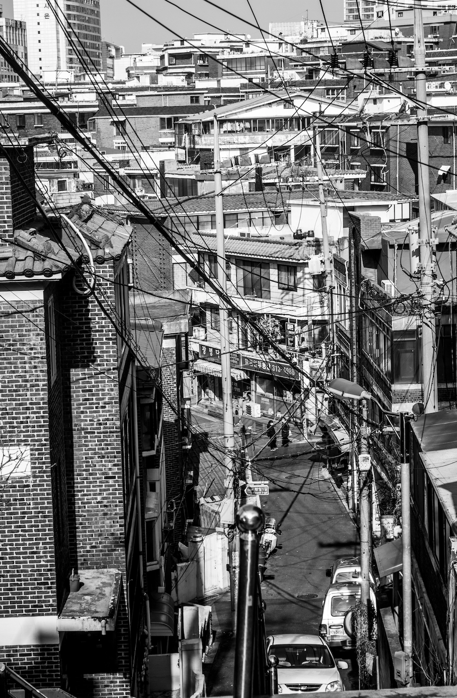

Jongno 종로

With old shops and restaurants occupying every possible space, Jongno has been the center of the city for 600 years, and it's the living history of Seoul. Messy electric wires, old-looking shop signs may seem messy, but they bring back old memories for some. It's also where the film "Parasite" by Bong Joon Ho was filmed!